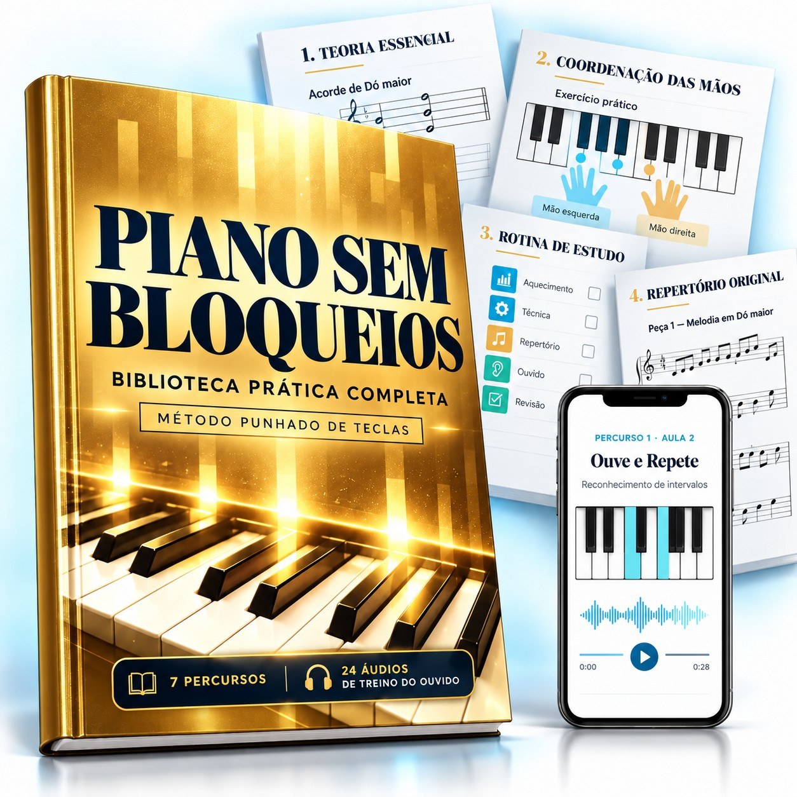

Antes de continuar
Veja este vídeo até ao fim.
Conheça um complemento para os próximos passos da sua prática ao piano.
Esta proposta é opcional e não condiciona o acesso ao método principal.
Biblioteca Piano Sem Bloqueios
Já tem por onde começar.
Tenha também como continuar.
Aprender a primeira música é só o começo. A Biblioteca Piano Sem Bloqueios reúne exercícios organizados para trabalhar cada área, sem ter de andar à procura de materiais soltos quando quiser avançar.
O método principal orienta o começo. A biblioteca acompanha os próximos passos, com sete percursos práticos para ganhar à-vontade ao piano, ao seu ritmo.

Quase metade do preço pelos sete percursos completos.
Um único pagamento. Sem mensalidades.
Condição apresentada nesta etapa da compra, para complementar o método principal.
Pré-visualização: os botões reais e o percurso de compra são apresentados pelo widget da Hotmart num acesso válido ao funil.
O que vem na biblioteca
Sete caminhos para continuar a tocar
Não precisa de fazer tudo de uma vez. Escolha o que o pode ajudar hoje, pratique um pouco e volte à música.
Independência das mãos
18 exercícios progressivos em três níveis, começando com as mãos separadas e juntando-as ao seu ritmo.
Ritmo e tempo
12 padrões em 2/4, 3/4 e 4/4, com palmas, contagem, metrónomo, balada e valsa.
Leitura visual
Pauta, claves, figuras rítmicas e exercícios curtos para ligar o que vê ao teclado.
Escalas e dedilhados
Desenhos das teclas, numeração dos dedos e passagem do polegar, primeiro com cada mão.
Treino do ouvido
24 áudios para ouvir a subida e a descida das notas, identificar notas e distinguir acordes maiores de menores, com respostas no final do material.
Rotinas de prática
Planos de 10, 20 e 30 minutos e uma folha para registar a evolução.
Repertório progressivo
Oito peças originais em três níveis, com melodia, cifras, baixo e metas de prática.
Pronto para usar
70 páginas de conteúdo e 24 ficheiros áudio para acompanhar a sua prática.